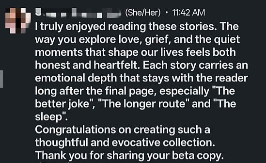
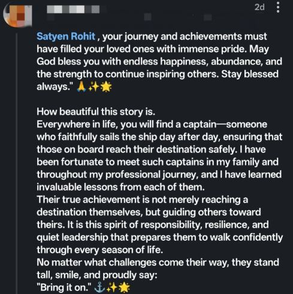
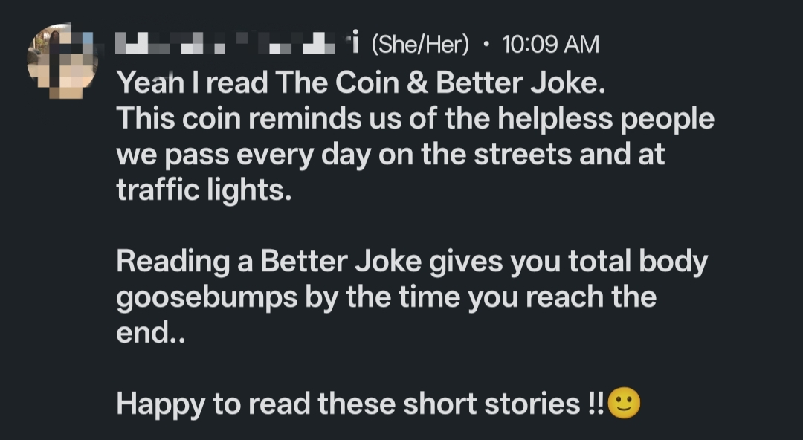
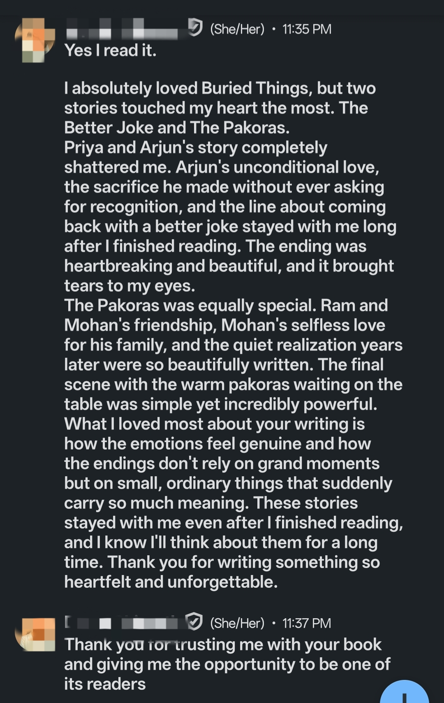

Each human is
a story untold.
Buried Things is ten of them.
A collection of literary short stories exploring memory, love, silence, hope, and the quiet moments that define us.

Satyen Rohit
Satyen Rohit has spent years working across borders, moving between cultures, and observing the quiet ways people carry their lives.
The stories in Buried Things grew from those years— from ordinary moments that quietly reveal extraordinary emotions.
He writes because some things cannot be left unsaid.

Buried Things
Ten Literary Short Stories
Each human is a story untold. Buried Things is ten of them.
A father who braids the mane of a mare the way he once braided his daughter's hair. A therapist who visits a dementia patient every day. A girl searching an abandoned city for food while trying to protect her younger sister.
Quietly devastating.
Deeply human.
Inside Buried Things
Yesterday he drank it for courage.
Today he drank it for peace.
The pakoras were still warm.
Please don't leave me alone.
I have no one left to make me laugh.
Means somewhere else is burning now.
What Readers Are Saying




